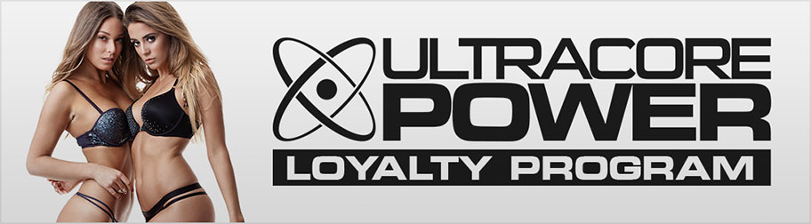

An all-around superior product with unmatched potency and technology

UltraCore Power shouldn’t be a surprise selection at #1. After all, it’s a massive combination of three top-of-the-line supplements that make up the best test-boosting experience ever. The rationale behind having three supplements as the core formulation is simple. Everything you need to boost test wouldn’t fit in a single-product formulation. That’s why UltraCore Power is made up of three of the best supplements available – Male UltraCore, Ultra Prime, and Ultra Edge. This unbeatable combination sparks the best-ever results that no other product on the market can match.

UltraCore Power™ is my ONLY go-to testosterone-boosting complex. Even with all my years trying to maintain a healthy physique and nutrition, I was unable to keep up with aging, until I used UltraCore Power™.
This is, by all applicable definitions, the best performance supplement you can get your hands on. You don’t even have to be an expert to realize that it’s the best in the business; you only have to compare the label and see how much more UltraCore Power™ offers than any other male enhancement brand. Three supplements, one easy package. It doesn’t get any better than that. Other companies I’ve seen would try to convince you that one product is enough to give you the results you want, but you’ll soon realize that it never really will. UltraCore Power gives you everything you could ever wish for in your male performance supplement, and that’s why it’s ranked #1 – not just by me, but plenty of other critics online too.
Calling UltraCore Power™ “superior” to other male enhancement brands is grossly undervaluing this amazing product; it’s on a class of its own. We’ve reviewed hundreds of products, and came to the conclusion that UltraCore Power™ offers the most complete, most impactful, and most effective formula that will definitely bring results you never thought possible.
UltraCore Power™ is a completely different experience that you simply can’t afford to miss out on. From raising t-levels to enhancing your performance and vigor, UltraCore Power™ doesn’t hold anything back. With the cutting-edge technology and formulation of UltraCore Power™, you can expect your performance, satisfaction, and confidence to reach new heights.
More than just a male enhancement supplement
UltraCore Power™ clearly shows its superiority to other male performance products with the qualities that matter the most – the supplement’s technology and ingredients. While other brands are recognizable through their ads and hype, UltraCore Power™ is better known for its actual results, which are bar none the best in the business.
I’ve always thought about male enhancement supplements to be completely focused on sexual performance - UltraCore Power™ is a completely different breed that focuses on the CORE of being a man – Androgens. These are the compounds that are responsible for all your masculine traits, including libido, lean muscle growth, and physical performance.
By enhancing the male core, UltraCore Power™ effectively allows your body to reach the peak of male performance. That’s why UltraCore Power™ is MORE than just a male enhancement supplement - it’s the complete male enhancement solution you need to conquer aging, performance issues, libido, and much more.
The results aren’t just promising; it’s proven by thousands of men who take UltraCore Power™ daily. Getting the right supplement to boost your core androgens could make such a huge impact on your outlook in life, especially when it comes to your performance and confidence.
Premium technology, world-class quality
No objective review would be complete without discussing the science, technology, and formulation that makes each product unique and effective – and it’s in this aspect where UltraCore Power™ truly shines the brightest.
UltraCore Power™ is the first-ever supplement powered by two supplement technologies, namely VI-PEX and STEM. These two technologies were developed from the ground up by UltraCore Power™ to produce the results needed to achieve better performance and function. Not only that, but UltraCore Power also features InstaTest Complex and SynerTech formula to further boost your results. These added technologies are made for one purpose only – to exponentially increase the results you get when you use UltraCore Power.
Keeping things simple, I’ll explain the principles that led UltraCore Power™ to develop these two breakthrough technologies.
When men get older, the two main factors that contribute the most to performance decline are blood flow problems and reduced t-levels. As men get older, it’s normal to experience a declining blood supply to your extremities, including the male organ. This leads to weaker erections and poor stamina. It’s also expected to have declining androgens as you get older, which affects your libido, lean muscle development, and energy.
To address these two factors, UltraCore Power™ developed VI-PEX and STEM, both with completely reimagined processes to fix the weaknesses that contribute to your decline as you get older.
VI-PEX mainly tackles blood supply problems through the use of effective vasodilation, while STEM enhances and sustains t-levels through the right combination of ingredients. These two technologies power UltraCore Power™, and it’s the main reason why UltraCore Power™ is ahead of its time.
VI-PEX Technology
VI-PEX combines ingredients that may help improve your declining blood flow through a delayed-release method that makes it both safe and effective. Through an optimized blood flow, you may be able to attain your desired performance. VI-PEX is further enhanced by STEM technology, which greatly enhances your t-levels.
STEM Technology
STEM Technology is one of the factors that make UltraCore Power™ a genuinely unique male enhancement supplement. The ability of STEM technology to enhance t-levels by boosting and suppressing the right androgens is second to none.
Low T-levels is one of the reasons why men feel weaker and less confident as they get older. Naturally, t-levels start to decline after puberty, as the body no longer needs high t-levels to develop male characteristics. The problem with T-levels is, it may appear as “normal” which is the minimum threshold for a healthy body, but it’s not as high as you want it to be if you want to enhance your libido and performance.
STEM Technology’s ability to boost and sustain T-levels make UltraCore Power™ the most advanced t-level-boosting supplement ever developed on the market today. This results in an impactful change in energy, libido, and performance.
InstaTest Complex
UltraCore Power takes it a step further by creating another homegrown technology used exclusively in Ultra Prime. InstaTest Complex focuses on enhancing the bioavailability and absorption of the nutrients introduced by UltraCore Power. This means that you get more ingredients absorbed, leading to better overall results.
SynerTech Formula
SynerTech is the final boosting stage of UltraCore Power as it brings all of the components together and creates a seamless follow-through of the components, allowing it to further maximize your results. SynerTech is used exclusively on Ultra Edge, and it primarily focuses on synergizing the ingredients, delivering a more focused, more impactful outcome.
Top-of-the-line ingredients.
You may be asking – What’s in UltraCore Power™ that makes it so effective?
It’s all in the ingredients. Not only does UltraCore Power™ heavily invest in research and development, but they also put a lot in on the ingredients used in the formula. I’ve gone through hundreds of male enhancement supplements, and only a small fraction of brands use standardized extracts for their formulas. Even so, not many brands use extracts with high enough concentrations.
Standardized extracts are basically isolated compounds from the organic ingredient, and the percentage represents how much of the compound is present relative to the ingredient content. If a supplement has 500mg of an ingredient and is standardized to 50%, then you can expect at least 250mg of the active component present in the formula. The result? The ingredient has a bigger impact on the overall formula compared to other powder-based ingredients.
The reason? Standardized extracts are incredibly expensive. Isolating, purifying and extracting the active components require several processing levels, which contribute to the expensive cost to manufacture these ingredients. Even so, UltraCore Power™ uses such high-quality ingredients to produce results like no other supplement in the market, and it manages to keep the cost affordable to consumers even with such a high processing cost.
The last performance supplement you’ll ever need
Think about this – when you’re in the market for a male enhancement supplement, would you rather settle for a cheap product that has questionable results?
If you’re like me who prioritizes results, then UltraCore Power™ is by far the most cost-effective choice. Through comparing supplements and their price points, UltraCore Power™ offers more, delivers more, and makes the biggest impact on your sexual performance and overall satisfaction.
Truth be told, there are many other supplements on the market that could produce decent results, but when it comes to something as intimate as sexual performance, you simply couldn’t afford to roll the dice. You need a sure thing, and that’s what UltraCore Power™ offers.
The real question is – how much do you value your sexual performance and overall well-being? As a guy in his 40s, I could definitely say that I have no time to test every single product that claims to be the best. That’s why I rely on good ‘ol science and common sense to choose products to try. UltraCore Power™ is not my first male enhancement supplement, and through my own experience, I determined that UltraCore Power™ doesn’t just look good on paper; its real value is in the results you get after taking the product daily.
How UltraCore Power dominates the competition
Let’s be crystal clear on one point – many other male enhancement supplements that claim to be able to increase your test levels and can actually pull it off. The real question is – by how much?
Some supplements exaggerate the results you get since the ingredients they used references some distant study that claims to be effective in increasing such traits. What really makes UltraCore Power™ different is the formulation that aims to deliver results that you can be satisfied with. There’s no exaggeration, overselling, or overestimating the results you get with the product. If your expectations have been dampened by years of taking supplements that do not work as advertised, then UltraCore Power™ would definitely change your mind.
UltraCore Power is a supplement and not a drug. You’re not curing a disease or symptom; you’re adding to your nutrition to bring about changes you want for your body. A lot of times, tests would show up normal, but you want something better, something more than what can only be classified as normal. UltraCore Power™ is the supplement that takes you to the next level.
UltraCore Power™ isn’t hesitant in saying that the product takes time to work because that’s what the science says. I’ve never seen a supplement product work overnight, and all the supplement studies suggest that it takes at least 3-6 months for a supplement to work.
Here’s the big caveat in taking UltraCore Power™ - the best results occur after taking UltraCore Power™ daily for 8-12 weeks. If you’re not prepared to commit to taking UltraCore Power™ for three months, then I’d suggest you re-evaluate your decision to buy male enhancement pills. You’d just be wasting money if you only take a supplement for one month, and I mean it with all sincerity. You can’t expect a fat burner to make you slim after taking it for 30 days, so why expect UltraCore Power™, which changes a lot more in your body, to work in just a month?
If you’re firm in your decision to overcome aging, regain your sexual performance, and change your life, then there’s no better male enhancement supplement than UltraCore Power™.
Is the Premier Loyalty Pricing worth it?

UltraCore Power offers a whopping 50% off your monthly payment if you complete three consecutive months of taking UltraCore Power. Surely, you’d think – three months just to get the savings? Will that be worth it by then?
My take on this is – YES. Let’s put things in perspective. Many of you believe that you’re saving money when you buy by the dozen – which is true. You’re paying less per unit of the product, and the rest would just have to sit in your storage until you use them. The same goes for supplements. Some supplement brands offer good discounts when you buy in bulk, but unfortunately, the other supplements would have to sit in your storage for the next few months, which may affect the “freshness” of the product. Surely, you wouldn’t want to take old or expired supplements, so it wouldn’t be applicable in this situation.
UltraCore Power’s Premier Loyalty Pricing gives you the option to get your supply of fresh UltraCore Power bottles sent to your address every month.
By simply following through on your UltraCore Power order, you’d get a big 33% discount starting on your 2nd month! If you register for free on ClubUltraCore.com, you also get a free UltraCore essentials supplement of your choice every month PLUS a discount of 60% on your 4th month onwards! If you do the math, for a 6-month period, you’d already save around $150 off the regular price. I doubt if any bulk discount offers can match the same amount. The best part is, you get a new bottle every month, ensuring the safety and effectiveness of the supplement.
By the third month, you may already experience the results promised by UltraCore Power, and it just makes more sense to continue taking UltraCore Power for as long as you need its benefits. Having a discount in place after the third month makes it easier on the budget to continue enjoying the life-changing benefits of UltraCore Power.
Lastly, one thing you need to make sure of prior to taking UltraCore Power™ is to buy the product on the official website. There have been reports of fake UltraCore Power™ pills being sold over the open market, and many men interested in the product are being duped into buying counterfeit pills. Apart from ensuring the safety and the quality of UltraCore Power™, you are covered by a money-back guarantee by buying directly from the website.